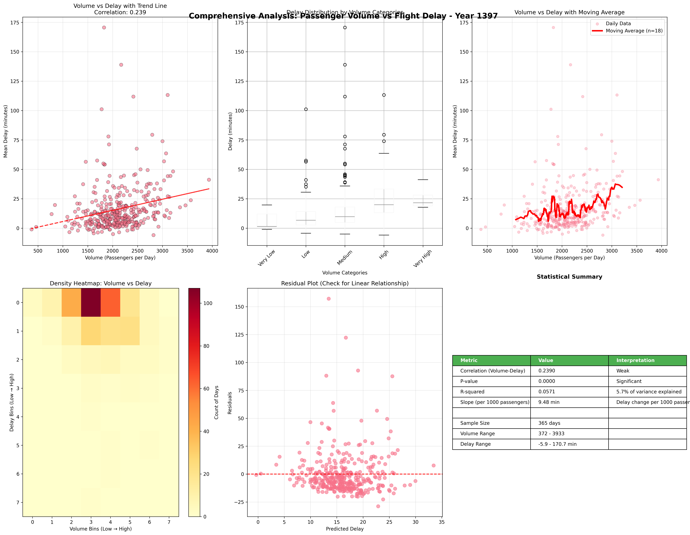
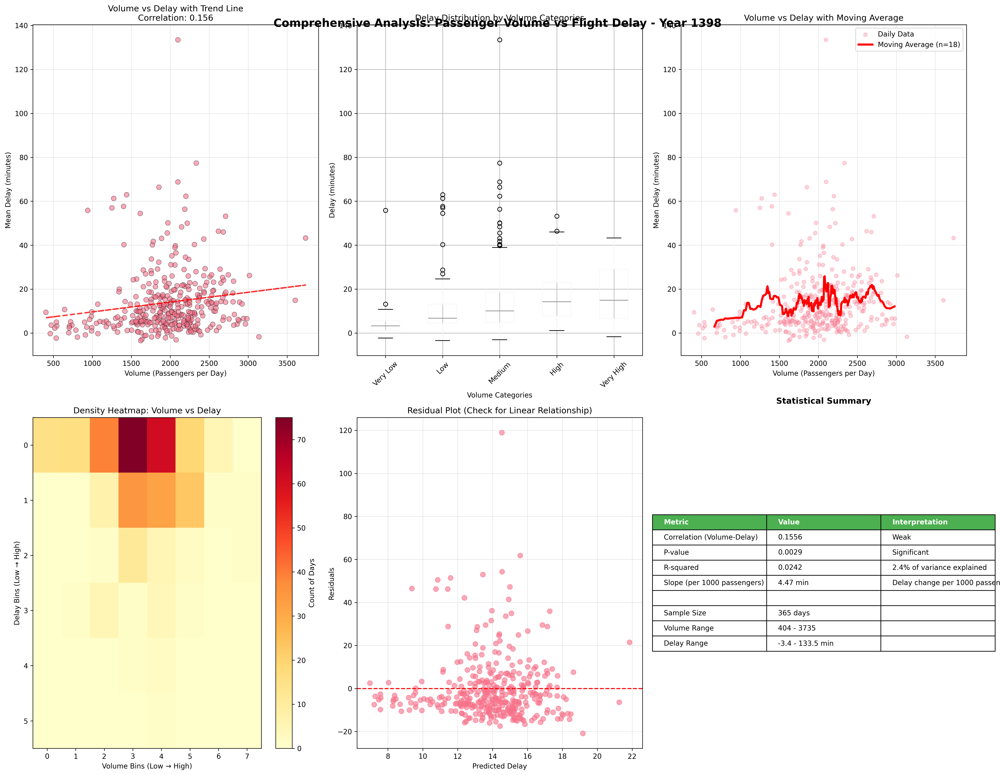
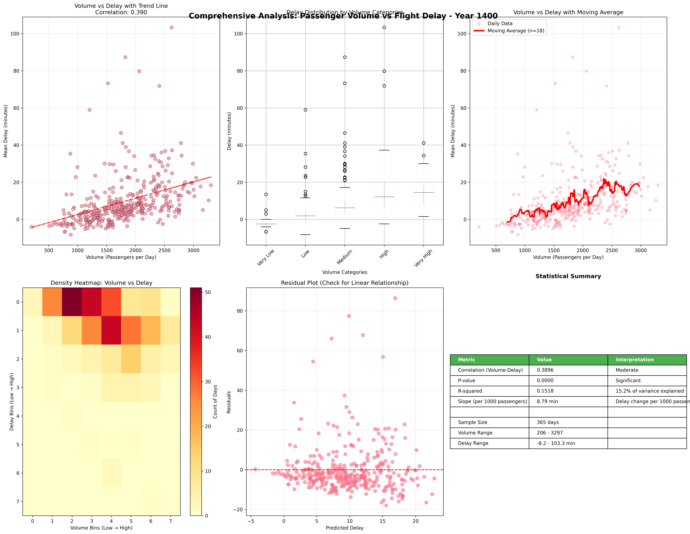
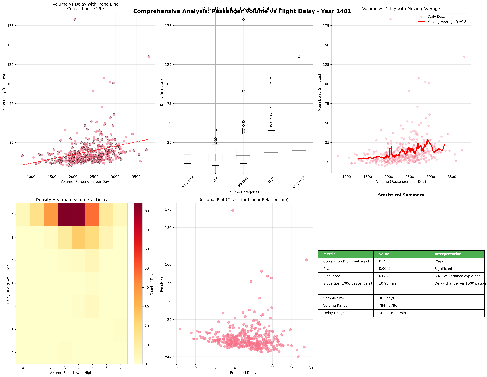
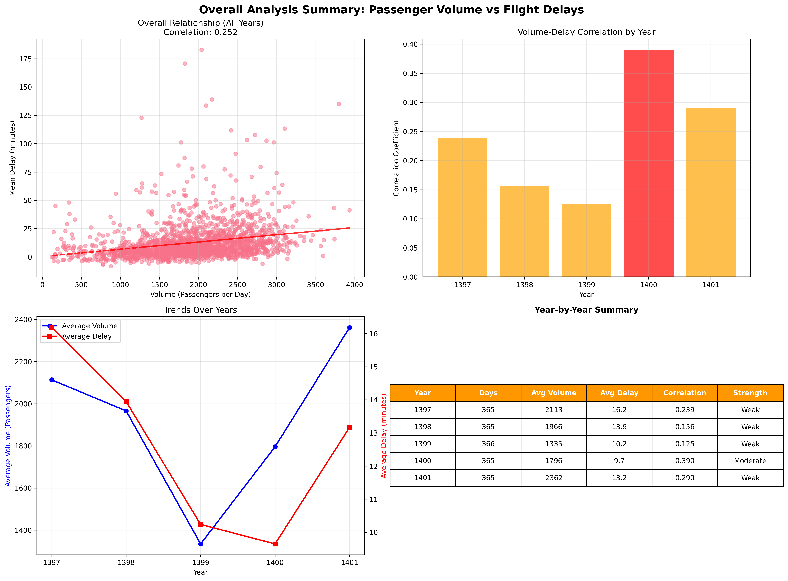
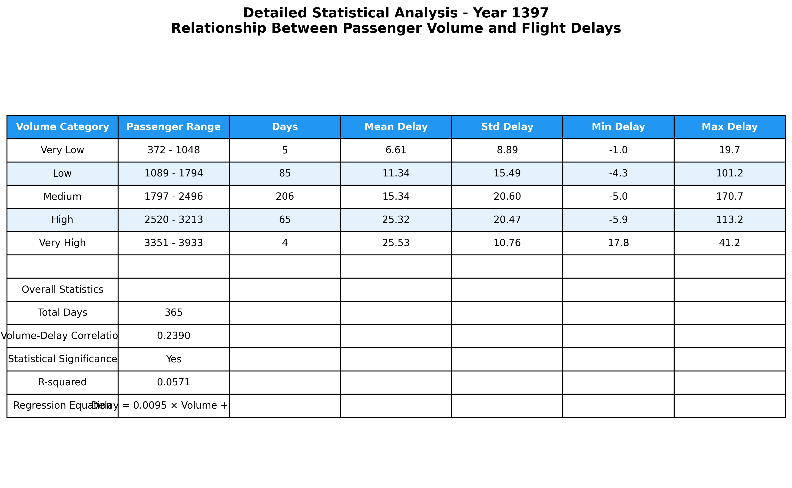
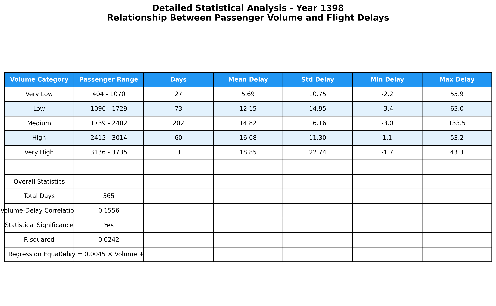
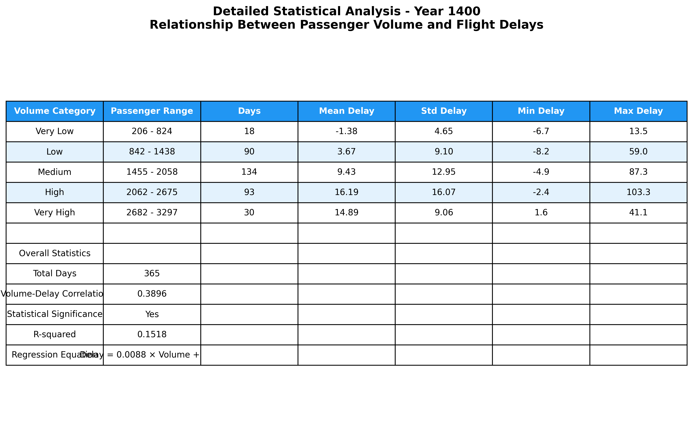
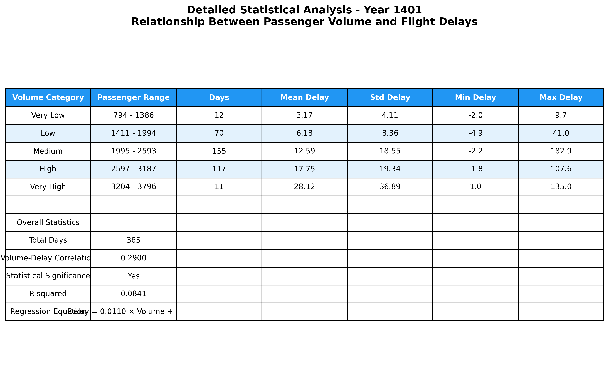

📊 Flight Delay and Volume Analysis
Below are the generated figures for different years, including statistical summaries and comprehensive analysis:
90th Percentile Plots


Comprehensive Analyses





Overall Summary

Statistical Tables




Prepared by Mohammadhossein Khodadad